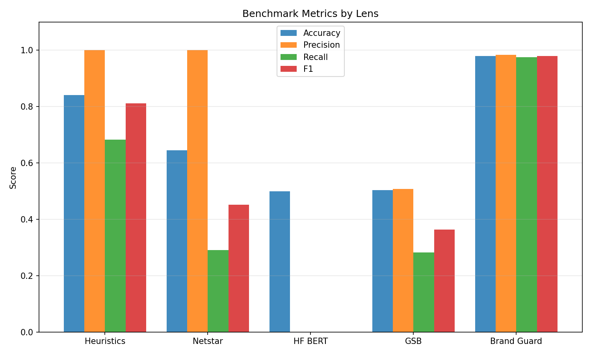
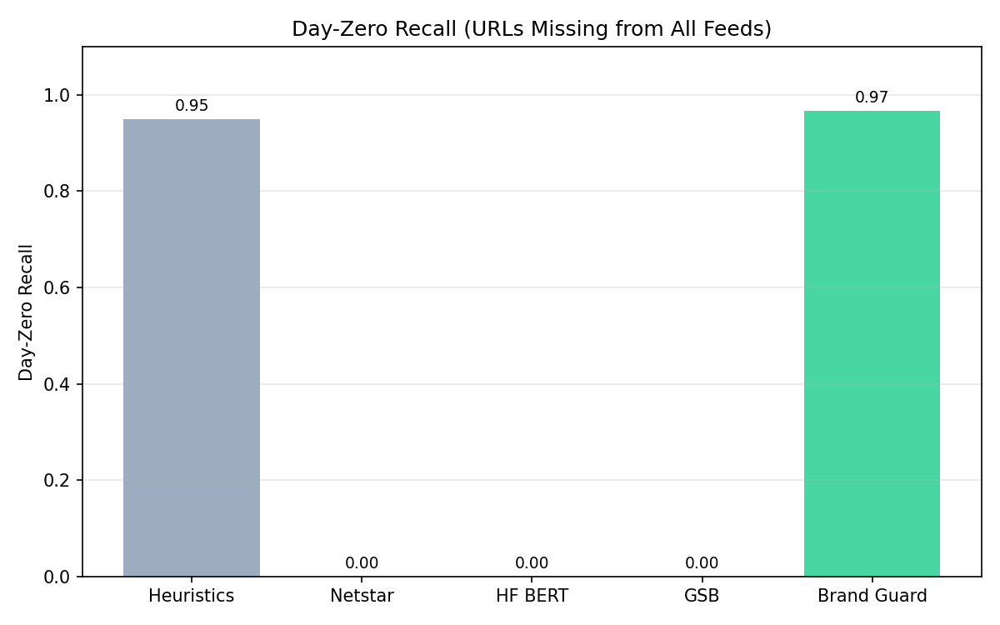
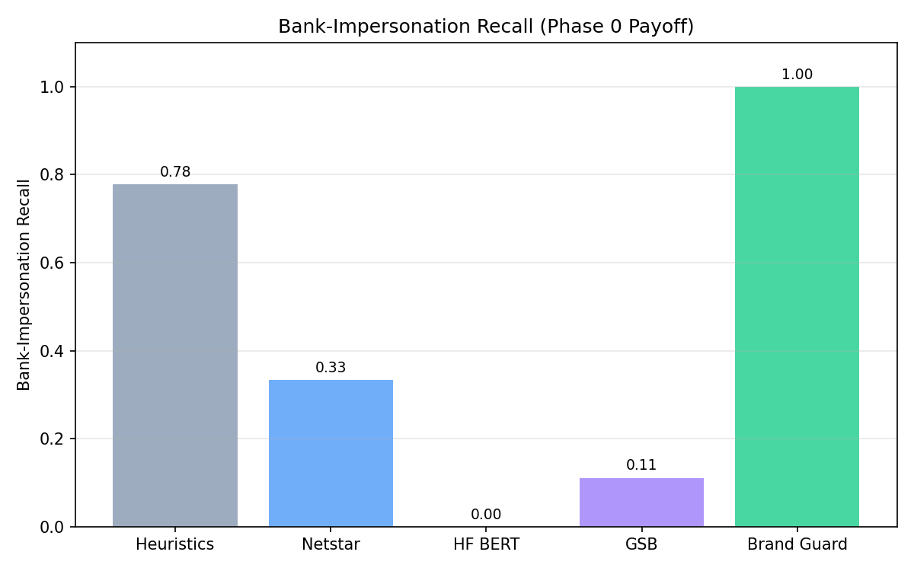
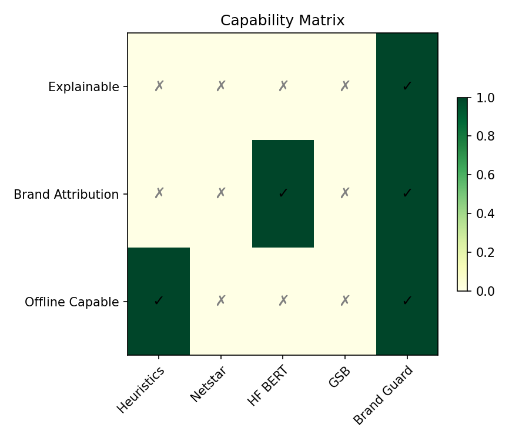

Explainable, brand-aware phishing triage that beats heuristics, blocklists, and generic ML — in one scan.
Capstone Benchmark · 12 Slides · ~12 Minutes
Phishing losses YoY
Of breaches start with phishing
Median phishing page lifetime
Reactive blocklists are always behind. Day-zero detection — catching a page before any feed lists it — is the battleground.
| Family | Example | Strength | Weakness |
|---|---|---|---|
| Rule-based | URL heuristics | Fast, offline | Content-blind |
| Blocklist | Netstar, GSB | Industry-grade | Day-zero blind |
| Generic ML | HF BERT classifier | Learns patterns | Brand-blind |
Brand Guard transcends all three by combining brand reasoning, content analysis, heuristics, intel, and explainability.
URL → Snapshot → 5 Detectors → Composite Score → Explanation
Every detector returns evidence, not just a number.
Two scans. Two outcomes. Both explainable.
chase-secure-login.tkwellsfargo.com/loginPhase 0: grew brand inventory from 10 to 110 (top 100 banks added).
This single slide rebuts most "is it overfit?" questions.


On URLs missing from all feeds, Brand Guard holds because brand-impersonation reasoning is content-driven, not feed-dependent.

Phase 0 payoff: Brand Guard is the only system trained and indexed on 100 banks.

Brand Guard is the only row with explainability, brand attribution, offline operation, and low latency.
HF BERT classifier:
chasse.com→ Clean (no concept of "Chase")Brand Guard:
chasse.com→ Phishing (typosquat, matched_brand=chase, 3ms)
Concrete evidence beats a black-box probability.
| Limitation | Mitigation / Roadmap |
|---|---|
| 2,200 rows is small for production | Continuous drift monitoring, active learning |
| Static HTML only | Headless browser rendering in pipeline v2 |
| Brand-login scope only | Broader brand inventory, browser extension |
Brand Guard: explainable, brand-aware phishing triage.